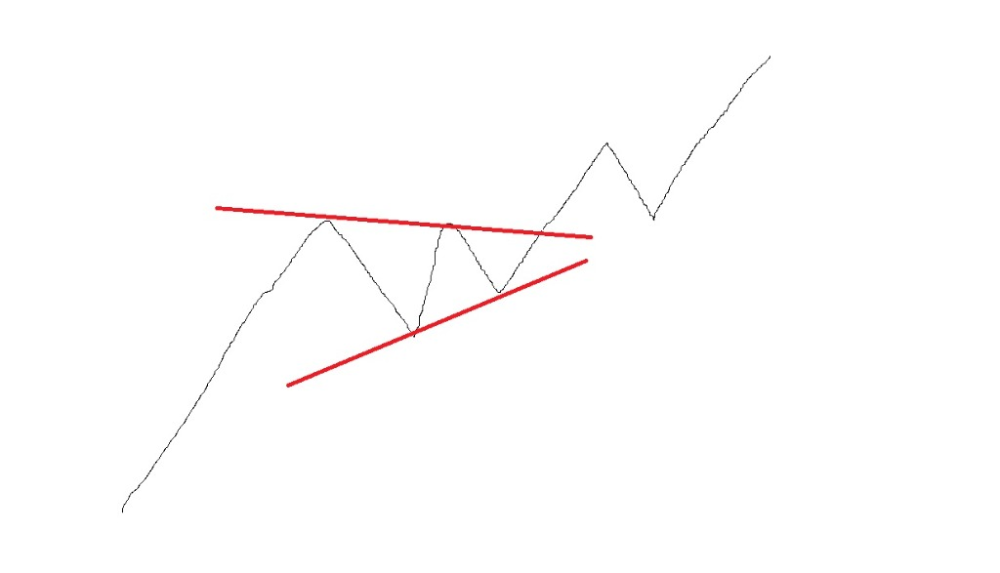
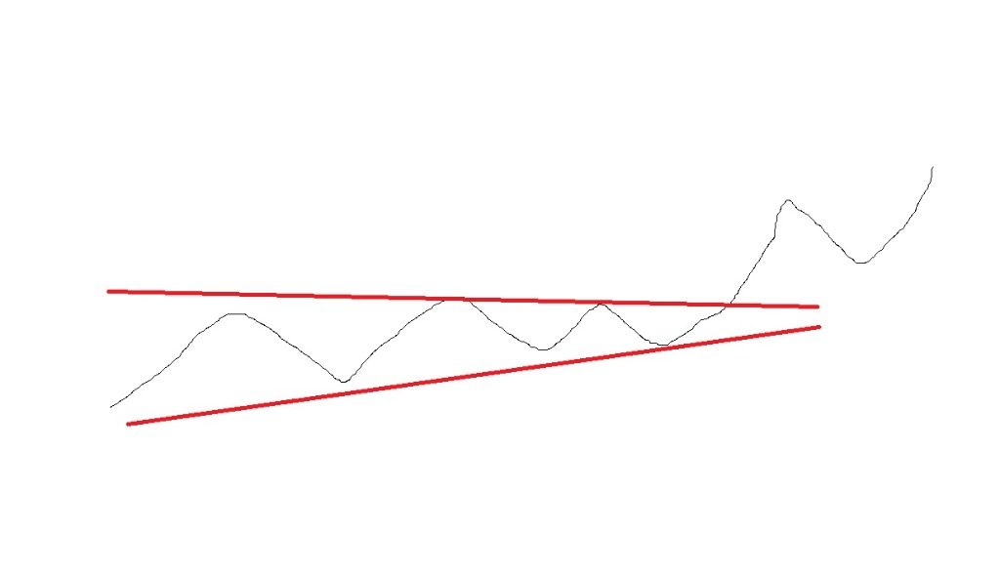

업데이트 확인 중...
(WRS(6MO)×40% + WRS_MD(6MO)×40% + Win-rate×Win_Factor×20%) × (Total count / (Total count + 5))(1 - (1/Total Count))로 보정하며, 종목 수가 너무 적어 순위가 급변하는 초소형 섹터의 튀기 현상을 (Total count / (Total count + 5)) 보정계수로 억제합니다.
(3개월 RS) - (6개월 RS)로 계산되는 상대강도 스프레드입니다. 이 스프레드가 양수(+)로 돌아서면 중단기 모멘텀이 장기 모멘텀을 넘어서 상승 흐름에 가속도가 붙었음을 입증합니다.(Up / (Up + Down)) * 100입니다. 수치가 80% 이상이면 애널리스트 대다수가 긍정적인 실적 상향을 내다보고 있음을 뜻합니다.(상단 밴드 - 하단 밴드) / 20일 이평선(중심선). 이 값이 0.15 이하로 수축되면 매도세가 완전히 마르고 에너지가 극단적으로 뭉쳤음을 뜻합니다.(현재 주가 / 52주 최고가) * 100. 이 값이 80% 이상(즉, 고점 대비 낙폭이 -20% 이내)인 종목들은 상단에 악성 대기 매물이 거의 없는 신고가 영역에 가깝다는 뜻입니다. 마크 미너비니의 주도주 선별 1순위 조건입니다.((당일 고가 - 당일 저가) / 당일 저가) * 100의 20일 평균. 변동성이 너무 둔한 주식은 제외하고, 한 번 돌파할 때 단기간에 30~50%씩 강력히 솟구쳐 줄 수 있는 '끼와 거래 탄력'이 살아 있는 종목(ADR 3.5%~4.0% 이상)을 걸러내는 핵심 지표입니다(크리스티안 쿨라매기 기법).((종가 - 저가) / (고가 - 저가)) * 100. 장중에만 급등했다가 윗꼬리를 길게 달고 하락 마감한 가짜 돌파(Bull Trap)를 거부하고, 장 마감까지 강한 수급을 지켜내며 캔들의 상단(50% 이상, 100%에 가까울수록 강함)에서 확실하게 마감된 진짜 돌파 캔들만 추적하기 위한 핵심 장치입니다.

전체 시장의 위험 선호도(Risk-on/Risk-off)를 판별하기 위해 ARKK(혁신성장 ETF)의 월봉 10선(10개월 이동평균선)을 기준으로 삼습니다. 혁신성장주로 돈이 들어오는 시기는 시장 유동성이 넘쳐나고 주도주 상승 탄력이 극대화되는 시기이기 때문입니다.
대세(월봉 10선)와 중기 추세(주봉 30선)를 조합하여, 내 주식 계좌의 실질적인 투자 비중과 적극성을 조율하는 핵심 전략 기준표입니다.
| 월봉 10선 (대세) | 주봉 30선 (중기) | 가격 위치 | 시장 해석 및 현재 국면 | 구체적 대응 전략 (Action Plan) |
|---|---|---|---|---|
| 상승 (↑) | 상승 (↑) | 가격 > 주봉 30선 | 최강의 제2단계 (강세 상승장) | 풀매수 및 강력 홀딩. 레버리지 및 주도주 비중을 최대(80%~100%)로 확보하여 수익을 극대화하는 골든타임. |
| 상승 (↑) | 상승 (↑) | 가격 < 주봉 30선 | 일시적 되돌림 (불트랩 예외 조정) | 강력한 추가 매수 기회. 주봉 30선 부근에서 지지를 확인하고 거래량 실린 양봉 반등 시 신규/추가 진입. |
| 상승 (↑) | 횡보 (→) | 주봉 30선 부근 | 상승 중 일시적인 숨고르기 | 주도주 포트폴리오 정비. 횡보 박스권을 가장 먼저 거래량을 싣고 뚫고 나가는 최상위 섹터 대장주 집중 매수. |
| 상승 (↑) | 하락 (↓) | 가격 < 주봉 30선 | 중기 추세 훼손 및 깊은 조정 | 보수적 접근. 대형 우량주의 주봉 30선 위 안착을 확인하기 전까지 신규 매수 금지 및 현금 비중 50% 유지. |
| 횡보 (→) | 상승 (↑) | 가격 > 주봉 30선 | 바닥 탈출 구간 (1단계 ➜ 2단계) | 분할 매수 시작. 섹터 주도 대장주 중심으로 비중을 점진적으로 확대하며 월봉 저항선 돌파 여부를 추적. |
| 횡보 (→) | 횡보 (→) | 박스권 갇힘 | 방향성 탐색 중 (에너지 수축) | 자금 보존 및 관망. 에너지가 위로 터지며 돌파하는 신호가 발생할 때까지 투자 비중을 20% 이내로 엄격히 통제. |
| 횡보 (→) | 하락 (↓) | 가격 < 주봉 30선 | 하락 전환 전조 (Stage 3 ➜ 4) | 리스크 비상 관리. 보유 주식 비중을 기계적으로 줄이고 현금 비중 70% 이상 확보하여 원금을 철저히 사수. |
| 하락 (↓) | 상승 (↑) | 가격 > 주봉 30선 | 대세 하락 중 기술적 반등 | 초단기 트레이딩만 허용. 월봉 저항이 바로 머리 위에 있으므로 목표가와 손절가를 짧게 잡고 빠른 단타 대응. |
| 하락 (↓) | 하락 (↓) | 가격 < 주봉 30선 | 공포의 제4단계 (대세 폭락장) | 전량 현금화 및 강제 휴식. 어떤 반등 신호도 일시적인 데드캣 바운스일 뿐이며 무조건 전량 매도로 시장 탈출. |
* 가격 위치: 주봉 종가 기준이며, 주봉은 주봉 30주 이동평균선을 뜻합니다.
이동평균선의 방향성과 주가의 이격 정도는 시장 참여자들의 심리적 본전 단가를 보여줍니다. 주가가 주봉 30선 위에 안정적으로 안착해 있고, 30선이 우상향하고 있다면 이는 시장 참여자들이 기꺼이 더 비싼 가격을 치르고서라도 매수할 용의가 있다는 가장 강력하고 신뢰성 높은 상승장(Stage 2)의 징표입니다. 반대로 30선이 우하향하고 주가가 그 밑으로 뚫려 내려간다면 어떠한 종목의 호재나 기술적 지지선도 무의미하며 지지선이 모래성처럼 붕괴될 것입니다.
중기 상대강도가 장기 상대강도보다 높다는 것은 주가 상승 탄력에 뚜렷한 가속도가 붙었음을 뜻합니다.
Today’s list 또는 Today’s Main 탭에 올라와 있는 종목 중 RS_Dif가 확실한 플러스(+)인 종목을 정조준합니다.과거 장기 추세는 매우 강했으나 최근 일시적인 조정으로 인해 중기 강도가 둔화된 상태입니다.
개별주 분석이 어렵다면 특정 산업군 ETF(예: SMH, XLK 등)의 이동평균선 배열 구조를 분석하여 3단계 국면 중 알맞은 타이밍에 투자합니다.
장기 이평선(200일) > 단기 이평선(20일) > 중기 이평선(60일)단기 이평선(20일) > 장기 이평선(200일) > 중기 이평선(60일)단기 이평선(20일) > 중기 이평선(60일) > 장기 이평선(200일)아무리 강한 종목도 하락장에서는 10개 중 8개가 동반 폭락합니다. 나스닥 100(QQQ) 또는 S&P500(SPY) 지수가 일봉 기준 50일선 및 200일 이동평균선 위에 안착해 있는지, 그리고 월봉 10선이 상승 중인지를 가장 먼저 체크합니다. 하락장일 경우 이 강세장 전략은 무조건 멈추고 현금을 대기해야 합니다.
Sector/Industry WRS 탭으로 이동합니다. 전체 섹터/산업군 중 **Final WRS 종합 순위가 상위 20% 이내**에 속해 있고, **25D CHG 순위 변동폭이 양수(+)**인 산업을 찾습니다. 이는 최근 한 달간 기관 투자자들의 거대 자금이 해당 업종으로 강하게 유입되며 주도 섹터로 급부상하고 있음을 나타내는 뚜렷한 증거입니다. (예: 반도체 장비, 전력 기기 등)
선정된 주도 섹터 명칭을 클릭하여 소속 개별 종목들의 상세 대시보드를 엽니다. 아래 펀더멘털 및 모멘텀 조건을 동시에 만족하는 '대장주' 1~2개만 엄선합니다.
아무리 좋은 주도주도 이미 너무 많이 오른 상태에서 사면 큰 고통을 겪습니다. 이격도(DIV)와 지지선을 활용해 매수 단가를 통제합
주도주가 강력하게 1차 급등한 후, 거래량이 급감하며 숨고르기(조정)를 할 때 리스크를 최소화하고 안전하게 매수 타이밍을 잡기 위한 **The Perfect Storm 치트시트**입니다.
대형 주도주가 폭발하기 직전, 차트와 거래량 지표에서 연쇄적으로 나타나는 숨은 수급 징후들입니다.
| 단계 | 수급 현황 | 핵심 지표 및 관측 조건 (Checklist) | 세력의 숨은 의도 및 해석 |
|---|---|---|---|
| 1단계 | 에너지 응축 (Condensation) | 볼린저 밴드 폭(BBWTHD) 0.15 이하 수축, VCP(변동성 축소 패턴) 완성, 일일 거래량의 20일 평균 대비 50% 이하 감소 | 시장의 단기 매도 물량이 완전히 소진되었으며, 주가가 폭발하기 직전의 태풍의 눈(조용한 구간) 상태입니다. |
| 2단계 | 거래량 괴리 (Divergence) | 주가는 일정 가격대에서 박스권을 그리며 횡보하지만, OBV(온밸런스볼륨) 지표는 계속 우상향 | 주가를 위로 올리지 않은 채 아래 깔리는 호가창 물량만 티 내지 않고 조용히 물량을 모으는 중입니다. |
| 3단계 | 과열 식힘 (Cooling Period) | 주가는 크게 내리지 않으면서, MFI(자금흐름지표)가 80(초과열)에서 50 이하(중립 이하)로 조용히 하락 | 가격 급등에 따른 피로와 단기 차익 실현 부담을 '가격 폭락'이 아닌 '기간 조정(옆으로 횡보)'으로 훌륭하게 극복해 낸 강세 시그널입니다. |
| 4단계 | 트리거 방아쇠 (Trigger Point) | 20일선(생명선) 부근 지지 안착 + 당일 거래대금의 평균 대비 2배 돌파 + 장대 양봉 혹은 아래꼬리가 긴 도지(Doji) 캔들 | 마지막 단기 조정을 마치고 20일선에서 지지를 받아 대기 매수세가 가파르게 들어오며 손바뀜이 완료되었음을 알려주는 매수 급소 신호입니다. |
| 5단계 | 연료 폭발 (Short Squeeze Fuel) | Short Volume Ratio(공매도 비중) 55%~60% 이상 축적, Days to Cover 5일 이상 유지 | 돌파와 함께 주가가 솟구칠 때, 가격 하락에 배팅했던 공매도 세력이 파산을 막기 위해 시장가로 주식을 되사야 하는(숏커버) 폭발적인 연료가 장전된 상태입니다. |
성장주 및 주도주 트레이딩에서 **20일 이동평균선(20MA)**은 단순한 선이 아니라 기관 투자자들의 **'심리적 본전 마지노선'**입니다.
개별 주식을 매수할 때는 공매도 데이터 분석이 필수적입니다. 공매도가 많이 쌓인 상태에서 주가가 밀리지 않고 지지를 받는다면, 돌파 시 공매도 환매수세(Short Cover)가 겹치며 가격이 수직 폭등(Short Squeeze)하게 됩니다.
| 공매도 일일 거래 비중 | 위험도 및 국면 해석 | 트레이더 대응 강령 |
|---|---|---|
| 25% 미만 | 극도의 안전 구간 (하락 베팅 거의 없음) | 시장의 매수세가 압도하고 있는 국면이며, 일반적인 추세 추종 전략을 편안하게 적용합니다. |
| 30% ~ 50% | 일반적인 우량주 정상 범위 | 시장조성자(Market Maker)들의 정상적인 파생 헤지 물량 수준입니다. 특이 사항 없는 일반 국면입니다. |
| 50% ~ 60% | 공매도 집중 공격 구간 (강세 경계) | 공매도 세력이 하락 압박을 강하게 가하고 있는 상태입니다. 만약 여기서 주가가 밀리지 않고 20일선이나 50일선 지지를 지켜낸다면 매우 강력한 매집 완료 시그널로 해석합니다. |
| 60% 이상 | 숏 스퀴즈 폭발 대기 (초강력 연료 장전) | **숏 스퀴즈 임박 신호.** 공매도가 극도로 무리하게 누적된 상태이므로, 전고점 돌파나 강력한 양봉 하나가 나오는 즉시 공매도 숏커버 뱅크런이 터지며 주가가 폭등하므로 적극 진입 대기합니다. |
"공매도 정보의 최고 권위 기관인 **Fintel의 창립자 빌 룩스(Bill Loucks)**와 공매도 잔고 추적 분석가 **이호르 두사니우스키(Ihor Dusaniwsky)**는 **'공매도 거래 비중(Short Volume Ratio)이 비정상적으로 치솟았을 때 주가가 매수 영역 지지선을 지켜내고 횡보하거나 고개를 들 때가 숏 스퀴즈 랠리를 겨냥한 가장 매력적인 기회'**라고 입을 모아 강조합니다."
위의 모든 조건(1~3단계의 변동성 축소 및 OBV 상승 매집)이 충족되고, 공매도 비중이 55%를 넘어가며 주가가 20일선 부근에서 좁게 버텨준다면 대기하십시오. 이후 **대량 거래량이 수반되며 전고점을 강한 장대 양봉으로 뚫고 올라가는 순간**이 바로 **풀매수(Full Buy) 타점**입니다. 숏 스퀴즈 압력과 기관 매수세가 맞물리며 가장 짧은 시간 내에 가장 폭발적인 시세 상승을 가져다줄 것입니다.
(현재가 / 52주 최고가) * 100 ≥ 80%20일선 > 60일선 > 120일선((현재가 - 50일선) / 50일선) * 100 ≤ 30%(최근 20일간 매일의 (고가 / 저가) 평균 - 1) * 100 ≥ 3.5~4%최근 60영업일(3개월) 내 ((최고가 - 최저가) / 최저가) * 100 ≥ 30%종가 > 직전 60영업일(전일 제외) 최고가당일 거래대금(종가 * 거래량) / 최근 20영업일 평균 거래대금 ≥ 2.0((종가 - 저가) / (고가 - 저가)) * 100 ≥ 50공부하신 내용을 실전 투자에서 언제든 꺼내 보실 수 있도록 급등주 포착 전략: The Perfect Storm 치트시트로 완벽하게 정리해 드립니다.
주가가 폭발하기 전, 차트와 수급에서 나타나는 핵심 징후입니다.
| 단계 | 항목 | 핵심 내용 및 지표 (Checklist) | 시장의 숨은 의도 |
|---|---|---|---|
| 1단계 | 응축 (Condensation) | VCP 패턴 형성, 볼린저 밴드(BB) 폭 0.3 미만 수축, 거래량 급감 | 팔 사람은 다 나갔고, 변동성이 극도로 낮아진 상태 |
| 2단계 | 괴리 (Divergence) | 주가는 횡보하지만 OBV(매집 지표)는 계속 상승 | 큰손들은 티 내지 않고 조용히 물량을 모으는 중 |
| 3단계 | 식힘 (Cooling) | MFI(자금흐름지표)가 80(과열)에서 50 이하로 하락 | 기술적 가격 부담이 해소되어 신규 매수세 유입 가능 |
| 4단계 | 방아쇠 (Trigger) | 20일선 지지 + 거래량 폭증 + 몸통이 작은 캔들 | 하락 압력을 이겨낸 강력한 손바뀜(매집형 조정 종료) |
| 5단계 | 연료 (Fuel) | 높은 Short Volume Ratio(60%↑) + Days to Cover(5일↑) | 주가 상승 시 공매도 세력이 항복하며 주가를 밀어 올림 |
단기 투자에서 20일선($MA(20)$)은 단순한 평균선 이상의 의미를 갖습니다.
공매도 데이터는 주가를 누르는 '압력'인 동시에, 반등 시 주가를 폭등시키는 '연료'가 됩니다.
| 구분 | 비중 (Ratio) | 투자자 대응 전략 |
|---|---|---|
| 안정/낮음 | 25% 미만 | 하락 베팅이 거의 없는 상태. 매수 우위 시장. |
| 정상/보통 | 30% ~ 50% | 일반적인 우량주의 범위. 마켓메이커의 정상적 헤지 물량 포함. |
| 높음 (경계) | 50% ~ 60% | 하락 압박이 거세지는 구간. 여기서 주가가 버티면 매집 신호. |
| 매우 높음 (연료) | 60% 이상 | 숏 스퀴즈(Short Squeeze) 임박. 전고점 돌파 시 폭등 가능성. |
"공매도 데이터 전문 분석 사이트인 Fintel의 창립자 빌 룩스(Bill Loucks)나 S3 Partners의 이호르 두사니우스키(Ihor Dusaniwsky) 같은 전문가들은 Short Volume이 평소보다 급증한 상태에서 주가가 밀리지 않을 때를 '상승 반전의 전조'로 봅니다."
위의 모든 조건이 충족된 상태에서 대량 거래가 터진 캔들의 고점(전고점)을 강력하게 돌파하는 양봉이 출현한다면, 그것이 바로 풀매수(Full Buy) 타점입니다. 이때 쌓여있던 공매도 물량은 주가를 수직으로 밀어 올리는 강력한 '불쏘시개'가 될 것입니다.